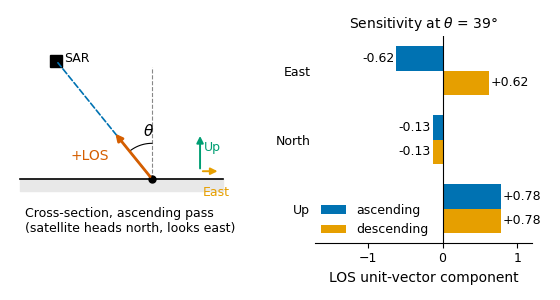

| SAR Concepts: From Phase to Displacement | |
An unwrapped interferogram measures how much the distance between the radar and the ground changed between two dates, and only along the radar line of sight (LOS). Turning that phase into a displacement map involves three decisions: which sign means what, how the LOS relates to east, north and up, and which point is taken as stable, because unwrapped phase has no absolute zero.
Once the flat-earth and topographic phase are removed (see InSAR), and ignoring atmosphere and noise, the unwrapped phase φ is proportional to the change in slant range between the reference date and the secondary date. SNAP uses the standard SLC phase convention exp(−j·4πR/λ) in its flat-earth and topographic phase models, and forms the interferogram as Reference × conj(Secondary), so
φ = (4π / λ) · (Rsec − Rref)
where λ is the radar wavelength and Rref, Rsec are the slant ranges to the same ground point at the two dates. Phase to Displacement and SBAS Inversion both apply
d = −(λ / 4π) · φ = Rref − Rsec
So a positive d means the range got shorter: the ground moved towards the satellite (for example uplift). A negative d means motion away from the satellite (for example subsidence). This holds when the secondary is acquired after the reference. If a pair is formed the other way round, the sign flips with respect to time.
One full fringe (2π) corresponds to λ/2 of LOS motion:
| Mission | Band | λ | One fringe (λ/2) | Per radian (λ/4π) |
|---|---|---|---|---|
| Sentinel-1 | C, 5.405 GHz | 5.55 cm | 2.8 cm | 4.4 mm |
| TerraSAR-X | X, 9.65 GHz | 3.1 cm | 1.6 cm | 2.5 mm |
| ALOS-2, NISAR | L, about 1.26 GHz | about 24 cm | about 12 cm | about 19 mm |
| NISAR | S, 3.2 GHz | 9.4 cm | 4.7 cm | 7.5 mm |
| BIOMASS | P, 435 MHz | 69 cm | 34 cm | 55 mm |
The radar sees only the projection of the 3-D ground motion D = (DE, DN, DU) onto the unit vector e that points from the ground to the satellite. For a right-looking SAR with incidence angle θ and platform heading α (measured clockwise from north):
d = −sinθ cosα · DE + sinθ sinα · DN + cosθ · DU
Polar-orbiting satellites fly close to north–south: α is about −10° to −15° ascending and about 190° to 195° descending, so sinα is about −0.2 on both passes. At θ = 39° the north coefficient is therefore about 0.13, against 0.62 for east and 0.78 for up. InSAR is nearly blind to north–south motion, most sensitive to vertical motion, and sees east–west motion with opposite signs from ascending and descending passes.

Figure 1. Left: cross-section of an ascending, right-looking acquisition; +LOS points from the ground to the satellite, the direction SNAP counts as positive displacement. Right: components of the LOS unit vector for Sentinel-1-like ascending (heading −12°) and descending (heading 192°) passes at θ = 39°. The north component is small and has the same sign on both passes.
Unwrapping recovers phase only up to an unknown constant (an integer number of cycles), and orbit and atmospheric errors add long-wavelength ramps (see phase unwrapping and atmospheric phase). A displacement map is therefore always relative. Choose a reference area that is coherent, believed stable and close to the area of interest, ideally a GNSS station, and subtract its mean value from the whole map. If SNAPHU splits the scene into separate connected components, each component can carry its own offset, and values cannot be compared across them.
One LOS measurement gives one equation per pixel. Combining an ascending and a descending interferogram that cover the same time interval, on a common geocoded grid and referenced to the same stable point, gives two equations. Because the north coefficient is small and similar on both passes, the usual practice is to neglect DN and solve for east–west and vertical motion. A full 3-D solution needs a third, independent look direction, for example along-track (azimuth) offsets or GNSS.
| Operator | Output band(s) | Unit | Conversion |
|---|---|---|---|
| Phase to Displacement | displacement | meters | d = −λ/(4π)·φ |
| SBAS Inversion | displacement_<date>, velocity, velocity_uncertainty | mm, mm/year | d = −λ/(4π)·φ |
| Horizontal/Vertical Motion | horizontalMotion, verticalMotion | millimeters | d = −λ/(4π)·φ per pass, then 2×2 inversion |
unw (in any case), normally Unw_Phase_ifg_<ref>_<sec> from SNAPHU
Import, using the wavelength in the metadata. It does not subtract a reference point.Phase_ifg, told apart by the Collocate _M/_S
suffixes) and incidenceAngleFromEllipsoid bands from Terrain Correction. Keep only the unwrapped
bands: a wrapped Phase_ifg band also matches, and the last matching band wins. The headings come from
the product metadata. It subtracts the phase at refPixelX, refPixelY (default
0, 0, the image corner, which is often no-data; choose a stable pixel) and assumes no north–south
motion. Its LOS step uses the same sign as the two operators above, so positive verticalMotion
means upward and positive horizontalMotion means eastward motion.Related concepts: InSAR, phase unwrapping, SAR geometry, InSAR time series.
Workflows: Sentinel-1 TOPS DInSAR and Stripmap DInSAR.